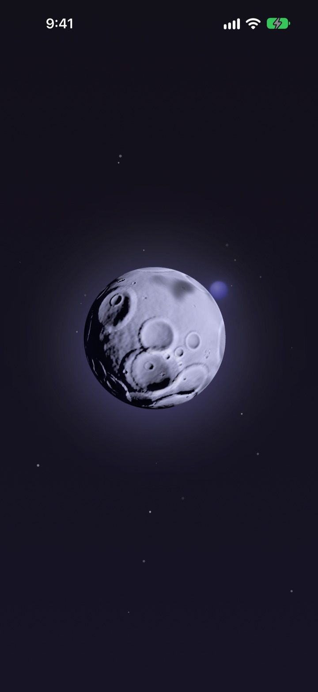
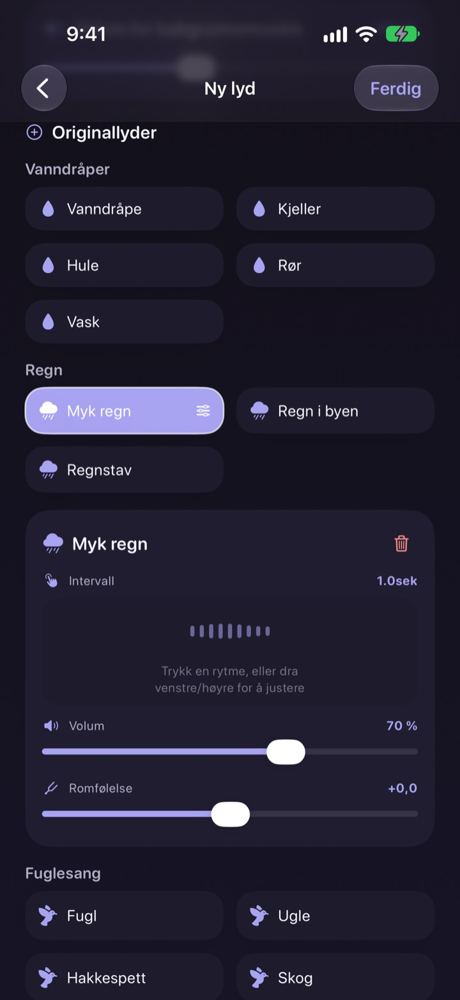
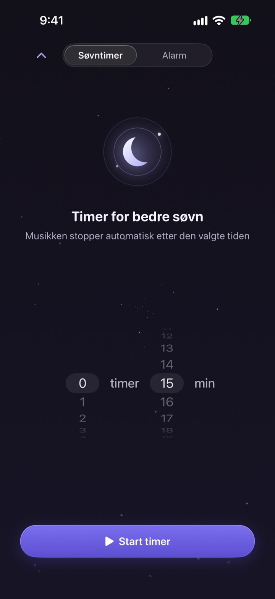
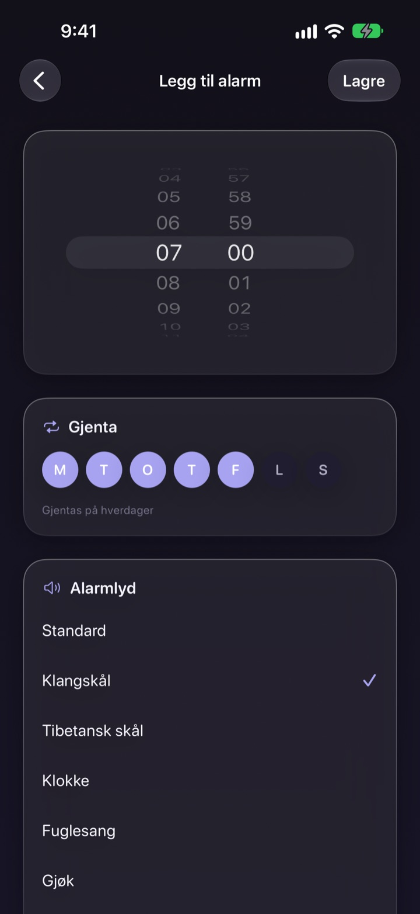
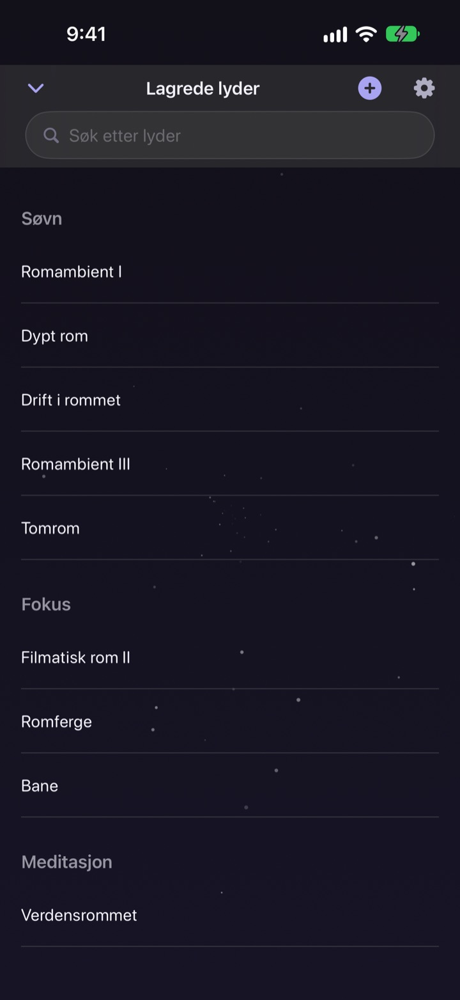

Ikke bruk natten på
å lete etter riktig lyd
Legg regn, vanndråper og en syngebolle sammen til din egen lyd én gang. Fra neste natt holder det med ett trykk på månen.
Alle lyder er gratis å lytte til. For iPhone og iPad.

Har du brukt en time på å finne noe å sovne til?
Regnet er for ensformig, bølgene for høye, og videoen avbrytes av reklame midt på natten. Med Dalbit legger du selv favorittlydene i lag til det passer akkurat deg, og gjemmer det bak én eneste måne.
Bygg lyden din i lag
Stable regn, vanndråper, fuglesang og syngeboller. Still inn volum, hvor ofte laget høres og hvor lyden kommer fra, og legg bølger eller piano under som bakgrunnsmusikk.
Gi miksen et navn, lagre den og kom tilbake til den hver natt.

Tones ut uten å vekke deg
Søvntimeren kutter aldri lyden brått. Den skrur langsomt ned, så slutten ikke vekker deg igjen.
Lyden fortsetter med skjermen av eller i en annen app, og lar du den være, dempes skjermen av seg selv.

Våkn mykt om morgenen
Still alarmer med syngebolle, tibetansk bolle, fuglesang eller gjøk, og gjenta dem på ukedagene du velger.

Én måne til alt
Trykk på månen for å spille av og igjen for å sette på pause. Sveip til siden for en annen lyd, opp for søvntimeren og ned for lagrede lyder.
Når en lyd føles riktig, holder du fingeren på månen for å legge den til i favoritter.

Kom i gang på tre steg
- 1
Trykk på månen
Åpne appen, trykk på månen, og lyden starter med en gang.
- 2
Sveip til siden
Fortsett til du finner en lyd du liker.
- 3
Still timeren og legg deg
Sveip opp, velg en tid, og etterpå tones lyden langsomt ut.
Dette gjør månen
- Trykk
- spill av, pause
- Sveip til siden
- neste lyd
- Sveip opp
- søvntimer og alarmer
- Sveip ned
- lagrede lyder
- Hold inne
- legg til i favoritter
Du kan også pause og fortsette fra avspillingskontrollene på låseskjermen.
Det er gratis å lytte. Premium er for å lage flere.
Gratis
- Alle lyder
- Legg lyder i lag til din egen miks
- Lagre opptil tre mikser
- Søvntimer som tones ut
- Alarmer med myke lyder
- Favoritter
Dalbit Premium
- Lag og lagre så mange mikser du vil
Månedlig abonnement med automatisk fornyelse og gratis prøveperiode
Abonnementet fornyes automatisk med mindre det sies opp minst 24 timer før gjeldende periode slutter, og du belastes når prøveperioden er over. Apples standard bruksvilkår (EULA) gjelder.
Vanlige spørsmål
Hvordan spiller jeg av og bytter lyder?
Trykk på månen på startskjermen for å spille av og igjen for å stoppe. Sveip til siden for en annen lyd, opp for søvntimeren og ned for biblioteket ditt.
Stopper lyden når skjermen slås av?
Nei. Den fortsetter med skjermen av eller i en annen app. Trykk på månen igjen eller bruk kontrollene på låseskjermen for å stoppe den.
Hva skjer når søvntimeren går ut?
Lyden stopper ikke brått. Den blir gradvis svakere og stopper så, så du ikke våkner.
Alarmen ringer ikke.
Appen ber om tillatelse til alarmer når du lager den første. Sjekk at den er slått på under Innstillinger > Dalbit.
Hvor lagres miksene mine?
Miksene, alarmene og innstillingene ligger bare på denne enheten. Sletter du appen, forsvinner de også.
Hva kan jeg bruke gratis?
Alle lyder, lag på lag og opptil tre egne mikser. Søvntimeren og alarmene er også gratis. Premium fjerner grensen for antall mikser.
Hvordan sier jeg opp abonnementet?
Gå til Innstillinger > Apple-konto > Abonnementer, velg Dalbit og si opp. Sier du ikke opp minst 24 timer før perioden slutter, fornyes det automatisk.
Jeg byttet telefon, og abonnementet er borte.
Logg på med samme Apple-konto, åpne abonnementsskjermen i Dalbit og trykk på Gjenopprett kjøp.
Hvordan melder jeg en feil eller foreslår en funksjon?
Send tilbakemelding fra appens innstillinger eller skriv til adressen nedenfor. Vi svarer som regel innen noen dager.
Spørsmål eller ideer? Skriv til mizzking75@gmail.com.